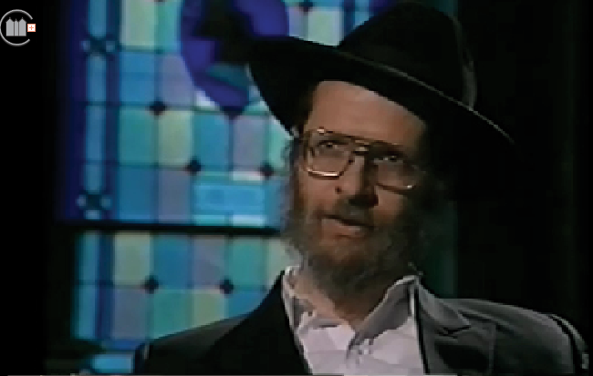

R’ Fitzy – On Learning in Yeshiva
In commemoration of the yahrzeit this Shabbos of the beloved mashpia, R’ Yosef Yitzchak Lipskier, of blessed memory, we bring one of his last talks on the great merits associated with learning in yeshiva.

People out there may be running around having a good time, but ultimately, sooner or later, they’re going to run out of good times – and that’s when you turn to other forms of entertainment, whatever that may be, drugs and so on. We know what the score is out there. If a person has a good set of values, he has purpose in life. There’s a future, family ultimately, and so on. Of course, the purpose is not to stay in this school, or college as you call it, but to take what you can from here and to go out there and to live the life like a decent human being. Of course, the best “decent human being” is a good Jew; a good Jew is a good American citizen. And this is what a yeshiva life offers.
It’s very difficult to explain to someone what something tastes like. You actually have to taste it yourself. Why should someone want to sit in college and break his head learning all about math? What for? He can go out there and just type in a computer and let the computer think for him. Why should he think? In yeshiva, first of all, you learn how to think. Although in colleges they also use their heads, but there is nothing like learning in yeshiva in terms of thinking – mastering the brain. And of course, that’s where it’s at. If you’re talking about a person with a solid emotional stability, first and foremost, there is a solid stable head. And that’s what one gets when he learns Torah – Gemara specifically, of course, Chassidus, the spiritual meaning behind what we’re doing, philosophy, philosophy of Chabad, and so on. In general, it just makes a person a better person.
There are people out there who go to work, day in and day out, and they’re sick and tired of what they’re doing. And why should they do it? They’re married to the same person for so many years, and they get sick and tired of that too. So why keep it up? We’re living in a new age – it’s called the Disposable Age – disposable dishes, disposable watches. It used to be that when you had a watch and it broke, what did you do? You went to a watchmaker and you fixed it. Today, for ten dollars you get a computerized watch with a calculator. Disposal wife: You don’t like it, you got sick of her? Get another one. This is where society is heading, as we can see. The rate of divorce is phenomenal, skyrocketing.
Again, with a good set of values and good emotional stability based on a good solid head, for a Jew, the only answer is the G-d-given prescription, which is learning Torah.
Judaism, at least in my opinion, is not a religion. Judaism is a way of life. If you want to experience a way of life, you don’t go to the library, not even to the movies. You have to come to where it’s at. You come to the yeshiva, it’s not only to learn – it’s not the learning experience; it’s the yeshiva experience. “Yeshiva” – just the name itself tells you something about it. Yeshiva is where you dwell; you live here. It’s not a school, nor is it a college – of course, it’s called a rabbinical college, but it’s a yeshiva. A yeshiva is where you experience life as a Jew, what it means to be a Jew. And it’s not just as an observer; you’re an active participant – and a first-hand experience is the best way to learn. You want to know what it’s about? Come and taste it. That’s what we would encourage anyone. You want to find out about yourself, about your religion, who you are, what does it mean to be a Jew, why should I be Jewish or religious? Taste it, find out. You’ve tried everything else. Come here, see what this is like – and then you can decide for yourself if this is for you or not.
The neshama, as we call it, the soul – whatever that may be in scientific terms – there’s always this inner struggle – Who am I and what do I know? In yeshiva, you can bridge that gap. Who am I and what I know must work hand in hand. Yeshiva, which teaches you Torah, the way of life for a Jew, incorporates every aspect of life. It discusses the scientific world, nature – it works within nature, within the system. Torah does not escape reality; yeshiva is not an escape as some people think. You want to escape reality – you go to a yeshiva, lock yourself up with books, and that’s it. On the contrary, the objective is to absorb religion, spirituality, G-dliness, which is within every Jew, whether he likes it or not. It’s there, the flame is there – and it’s going to eat away at you, one way or another. It’s going to surface; it’s going to ignite – the question is will you be able to handle it. Because your self is something you’re going to have to live with for the rest of your life. What are going to do with that? You come to yeshiva to really learn about yourself and how you fit in to this world of science, math, medicine, or whatever world you’re into – it brings it all together and makes you a wholesome person.
What does “meditating on life” mean? First, you can meditate on what’s life all about. This is a good place to do it. But more so, it’s to meditate on what life used to be like, what your grandfather looked like, what he lived like. Just imagine and look around: This is a scene in the old country. What did the city look like? This is what the Rebbe is saying. This is what you imagine. What did they live like? What kind of luxuries did they have? What did he look like? Can you imagine your father, your grandfather?
This has happened many times before. A student comes to the yeshiva – he’s not religious, his father wasn’t religious. I say, “Nu, nu – but the truth is: Look back a little – you have a picture of your grandfather, your grandfather? Let’s see.” The guy gets a picture – he goes crazy. He comes in with a family picture of his great-grandfather, a man with a big beard and a black hat. “This is my grandfather! Super!” So to look back and meditate, to picture – if you have an actual picture, that’s great – if you don’t have the actual picture, it’s all here (pointing to his head). What was it like in the old country?
The Jewish nation is not just me here today. We’re all connected – it’s one cycle, one entity from the beginning of time until today, until Moshiach comes.
There’s an old game – it’s called “Hide and Seek.” How did they used to play it? Father hides and the kids go looking for him. Just imagine yourself as a little twerp, three years old, when you find him, it’s a great feeling, such a simcha. What would happen if all of a sudden, the kid’s playing this nice game and his father is hiding under his bed, and while he’s looking for him, he finds a lollipop or a nice toy. The kid sits down with his toy, gets carried away, and forgets about Papa. What does the father feel like now lying under the bed? Like a real you-know-what. No one’s looking for him. That’s the worst of all.
Who invented this game? The Alm-ghty. That’s what this is all about. It’s “Hide and Seek.” He’s hidden everywhere. Of course, we don’t see him. If we would see it, it would be obvious. What would be the whole purpose of serving G-d? What does it mean to “serve G-d?” You have to find Him. Find Him in yourself, find Him in nature, find Him through your Torah and mitzvos, your good deeds, through learning, etc. The job is to find; that’s what we’re here for.
Beis Moshiach (staff). "R’ Fitzy – On Learning in Yeshiva." Beis Moshiach, no. 1103 (January 23, 2018).